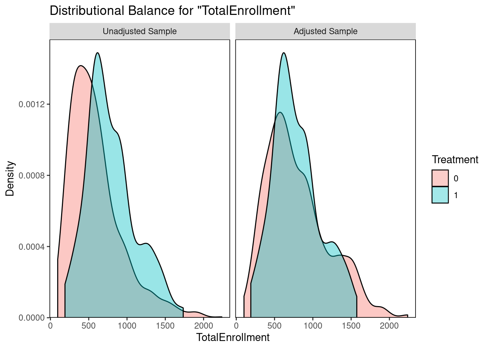

Chapter 3 descriptive
How does Gifted and Talented affect student test scores?
3.1 Data Overview
3.1.1 Data cleaning
Using OpenData NYC, we pull aggregate K-8 attendance records and socio-economic variables for all 1125 public schools in NYC.
| DBN | School Name | ENI | % Male | % Black | %SWD | % Poverty | |
|---|---|---|---|---|---|---|---|
| 1 | 01M015 | P.S. 015 Roberto Clemente | 190 | 0.890 | 0.479 | 0.032 | 0.258 |
| 2 | 01M019 | P.S. 019 Asher Levy | 257 | 0.679 | 0.556 | 0.062 | 0.350 |
| 3 | 01M020 | P.S. 020 Anna Silver | 497 | 0.800 | 0.509 | 0.032 | 0.237 |
3.1.2 Visualizing the Treatment (GT option)
Treatment in each borough. 101 schools have the gifted option, 653 no gifted option

3.1.3 Raw Differences in Outcome and Covariates
small$`3 2019.ela` <-gsub(",","",small$`3 2019.y`,fixed = TRUE)
small$`3 2019.math` <-gsub(",","",small$`3 2019.x`,fixed = TRUE)
library(tidyverse)
small<- small %>%
group_by(treatment) %>%
na.omit() %>%
filter(`3 2019.ela` != "s")
small %>%
summarise(mean_third_ela = mean(as.numeric(`3 2019.ela`)),
mean_third_math = mean(as.numeric(`3 2019.math`))) %>%
kable(caption = "Outcome Differences by Treatment",
col.names= c("Treatment", "Mean ELA", "Mean Math"),
digits = c(0,2,2))| Treatment | Mean ELA | Mean Math |
|---|---|---|
| 0 | 598.21 | 598.71 |
| 1 | 607.88 | 608.74 |
#
# table(small$GT_option)
### GT Option by Economic Need, Poverty, Enrollment
small%>%
group_by(GT_option) %>%
summarise(mean_ec = mean(`Economic Need Index`),
mean_poverty = mean(`% Poverty`),
total = mean(`Total Enrollment`))## # A tibble: 2 × 4
## GT_option mean_ec mean_poverty total
## <chr> <dbl> <dbl> <dbl>
## 1 gifted option 0.574 0.614 790.
## 2 no gifted option 0.745 0.778 602.small%>%
group_by(SC_option) %>%
summarise(mean_ec = mean(`Economic Need Index`),
mean_poverty = mean(`% Poverty`),
total = mean(`Total Enrollment`))## # A tibble: 2 × 4
## SC_option mean_ec mean_poverty total
## <chr> <dbl> <dbl> <dbl>
## 1 no SC option 0.533 0.540 481.
## 2 SC option 0.764 0.804 660.#### GT Option by Borough
### boroughs
small %>%
group_by(borough, GT_option) %>%
summarise(mean_ec = mean(`Economic Need Index`),
mean_poverty = mean(`% Poverty`),
total = mean(`Total Enrollment`))## `summarise()` has grouped output by 'borough'. You can override using the
## `.groups` argument.## # A tibble: 10 × 5
## # Groups: borough [5]
## borough GT_option mean_ec mean_poverty total
## <chr> <chr> <dbl> <dbl> <dbl>
## 1 Bronx gifted option 0.736 0.762 779.
## 2 Bronx no gifted option 0.887 0.905 658.
## 3 Brooklyn gifted option 0.659 0.675 793.
## 4 Brooklyn no gifted option 0.785 0.802 560.
## 5 Manhattan gifted option 0.529 0.515 607.
## 6 Manhattan no gifted option 0.661 0.666 454.
## 7 Queens gifted option 0.521 0.613 900.
## 8 Queens no gifted option 0.661 0.743 709.
## 9 Staten Island gifted option 0.390 0.472 817
## 10 Staten Island no gifted option 0.578 0.629 599.### GT Option by School Type *** NOTE: Middle Schools again have the biggest difference
small %>%
group_by(school_type, GT_option) %>%
summarise(mean_ec = mean(`Economic Need Index`),
mean_poverty = mean(`% Poverty`),
total = mean(`Total Enrollment`))## `summarise()` has grouped output by 'school_type'. You can override using the
## `.groups` argument.## # A tibble: 6 × 5
## # Groups: school_type [4]
## school_type GT_option mean_ec mean_poverty total
## <chr> <chr> <dbl> <dbl> <dbl>
## 1 Elementary gifted option 0.587 0.632 767.
## 2 Elementary no gifted option 0.753 0.786 577.
## 3 gifted gifted option 0.097 0.056 358
## 4 K to 8 gifted option 0.633 0.676 948.
## 5 K to 8 no gifted option 0.710 0.745 703.
## 6 Middle gifted option 0.283 0.247 776.3.2 Naive regression models (without matching)
Treatment (GT) higher ELA and Math scores
mod <- lm(`3 2019.ela` ~ treatment + `Economic Need Index` + `Total Enrollment`, data =small)
summary(mod)##
## Call:
## lm(formula = `3 2019.ela` ~ treatment + `Economic Need Index` +
## `Total Enrollment`, data = small)
##
## Residuals:
## Min 1Q Median 3Q Max
## -22.9940 -4.7151 -0.4763 4.3516 25.6512
##
## Coefficients:
## Estimate Std. Error t value Pr(>|t|)
## (Intercept) 6.177e+02 1.023e+00 603.966 < 2e-16 ***
## treatment 4.421e+00 7.701e-01 5.741 1.36e-08 ***
## `Economic Need Index` -2.813e+01 1.097e+00 -25.642 < 2e-16 ***
## `Total Enrollment` 2.348e-03 8.347e-04 2.813 0.00503 **
## ---
## Signif. codes: 0 '***' 0.001 '**' 0.01 '*' 0.05 '.' 0.1 ' ' 1
##
## Residual standard error: 6.854 on 750 degrees of freedom
## Multiple R-squared: 0.5319, Adjusted R-squared: 0.53
## F-statistic: 284 on 3 and 750 DF, p-value: < 2.2e-16table(small$treatment)##
## 0 1
## 653 101mod <- lm(`3 2019.math` ~ treatment, data =small)
summary(mod)##
## Call:
## lm(formula = `3 2019.math` ~ treatment, data = small)
##
## Residuals:
## Min 1Q Median 3Q Max
## -25.712 -6.712 -0.712 5.288 33.288
##
## Coefficients:
## Estimate Std. Error t value Pr(>|t|)
## (Intercept) 598.7121 0.3453 1733.69 <2e-16 ***
## treatment 10.0305 0.9436 10.63 <2e-16 ***
## ---
## Signif. codes: 0 '***' 0.001 '**' 0.01 '*' 0.05 '.' 0.1 ' ' 1
##
## Residual standard error: 8.825 on 752 degrees of freedom
## Multiple R-squared: 0.1306, Adjusted R-squared: 0.1295
## F-statistic: 113 on 1 and 752 DF, p-value: < 2.2e-16